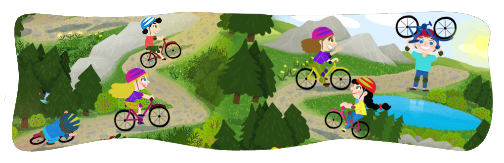

În acest an, peste 100 de cercetaşi din centrul local AMD Pildești, cu vârste cuprinse între 5 şi 30 de ani, vor lua parte la Campul centrului local, care va avea loc în comuna Cristian, Brașov. Pentru că la cercetaşi toate activităţile vin cu o poveste, cadrul simbolic (tema taberei) din acest an este inspirat de Jocurile Olimpice. Toate activităţile au primit denumiri sugestive şi totul se va desfăşura sub forma unei competiţii. Programul se va întinde pe parcursul celor 7 zile petrecute în natură. Acesta va include două zile de construcţii, timp în care va fi ridicat campul, se vor construi adăposturi de soare sau în caz de ploaie, duşuri sau locuri pentru spălat vase, dar şi un catarg unde se va ridica în fiecare dimineaţă steagul (ONCR). Şi aceste activităţi au primit denumiri speciale, precum 500m noduri, săpături viteză sau construcţia artistică, activităţile fiind transformate în probe, prin care cercetaşii, organizaţi în patrule (echipe) pot câştiga puncte.
Programul va mai cuprinde şi 1, 2 sau 3 zile de hike, care în acest an a primit denumirea de triatlon, şi are 3 probe principale:
Fiecare din aceste probe vor fi organizate în funcţie de specificul şi nevoile prezente în fiecare ramură de vârstă, mai exact:
Totodată, va mai fi o zi de olimpiadă, în cadrul căreia va avea loc competiţia propiu-zisă, unde cercetaşii se vor întrece în probe precum ski pe iarbă, aruncarea bocancului, trasee cu obstacole sau căţărarea viteză. Pentru cei mici, s-au pregătit şi câteva ateliere, unde îşi vor descoperi talentele muzicale, de pictură sau vor învăţa despre acordarea primului ajutor în caz de nevoie. O zi va fi adresată unui joc comun, de mare întindere, la care vor participa toţi cei prezenţi în camp, iar ziua de sâmbătă va fi ziua porţilor deschise, în care cercetaşii aşteaptă vizita părinţilor şi a prietenilor, aceasta fiind urmată de seara farfuriilor deschise, în cadrul căreia patrulele de cercetaşi îşi vor etala abilităţile într-ale gătitului. Ultima seară de camp este, tradiţional, concretizată prin fiesta, în cadrul căreia vor participa toţi cercetaşii prezenţi în camp şi vor cânta cântece de munte în faţa unui foc mare de tabără.
Cei mici trebuie să aducă cu ei următoarele:
Pentru mai multe informații despre noi și activitățile noastre ne găsiți aici. De asemenea ne puteți scrie la adresa Sau la numărul de telefon